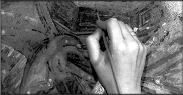

II.
Problematica filosofiei religiei
Ați văzut în lecțiunea trecută ce înțelegem în linii mari prin filosofia religiei. Ați văzut cele două probleme fundamentale care se pun acestei discipline speciale: problema esenței naturei religiunii și problema conținutului de adevăr, a adevărului religios. Ați văzut că, în legătură cu această din urmă problemă trebuie considerată eventualitatea unei interpretări a universului din punct de vedere religios și a unei confundări de țeluri cu acelea ale metafizicei.
Spuneam însă, tot în prelegerea trecută, că filosofia religiei nu poate să însemne în nici un caz o filosofare asupra universului dintr–un punct de vedere religios, ci o cercetare filosofică asupra religiunii ca fapt religios întâmplat, ca fapt întâmplat.
Dar dacă, în adevăr, religia poate să ajungă la un fel de considerare generală și la un fel de interpretare a universului, pare că ar trebui să se confunde această preocupare a filosofiei religiei, tocmai ca o filosofare asupra universului, asupra universului din punct de vedere religios, adică tocmai ce spuneam ieri că nu poate să fie, pentru noi, filosofia religiei.
Prin urmare, lucrul acesta tocmai trebuie să–l lămurim. Lămurirea este simplă. Nu este nici o contrazicere între ceea ce spuneam la început și ceea ce afirmam la finele lecțiunii de ieri. Căci, în adevăr, noi constatăm că o viață religioasă ajunsă într–o treaptă anumită de cultură, și anume, pe o treaptă mai ridicată de cultură, vrând–nevrând ajunge și la o interpretare a universului. Aceasta însemnează însă că, în cadrul religiunii, există un fel de metafizică religioasă. Dar aceasta nu înseamnă că, în cadrul filosofiei religiunii, noi trebuie să facem această interpretare religioasă a existenței și a universului. Vasăzică, întru atât întrucât noi studiem conceptul de religiune și faptul acesta care se numește religie, o să ajungem să studiem și rădăcinile interpretative, și îndeletnicirea interpretativă a religiunii. Dar nu vom face noi înșine, în cadrul prelegerilor de filosofia religiei, nu vom avea să facem noi înșine o interpretare religioasă a universului.
Problema esenței religiei. Experiență religioasă
1. Acum, dacă revenim la cele două probleme fundamentale pe care vi le–am enunțat, anume problema esenței religiei și a conținutului de adevăr al religiunii, adică, cum am spus, probleme rezervate speculațiunii și vieții religioase, avem deja cele două grupe mari de probleme cari trebuie să fie tratate într–un curs de filosofie a religiei.
Prima problemă, aceea a esenței religiei, este, nu zic cea mai importantă, dar cea mai căutată, cea mai cercetată în zilele de față. Ea trebuie să surprindă în religie propriu–zis însăși acea funcțiune creatoare a religiunii, adică, cum am spune cu alte cuvinte, procesul interior religios.
Primul fapt care interesează în această ordine de idei este așa–numita experiență religioasă, adică faptul religios, actul religios. Vasăzică, o considerare a vieții religioase înăuntrul individului în momentul de viață religioasă. Prima problemă în cazul acesta este actul religios, adică pozițiunea specifică, structura specifică a conștiinței omenești în momentul de viață religioasă.
Viața religioasă a constituit un domeniu aparte de fapte sufletești și, ca atare, are notele ei specifice. Ei bine, tocmai aceste note specifice, caracteristice, îmbinarea tocmai a acestor note specifice din conștiința umană în general formează așa–numita problemă a actului religios.

Convingere religioasă
2. Dar actul religios ca atare este mai degrabă un fel de determinare formală a funcțiunii sufletești în viața religioasă, este fără îndoială o activitate. Dar în ceea ce privește actul religios, analiza lui ca fapt religios, [el] nu este decât activitate pură. Această activitate pură trebuie să fie distinctă de rezultatele activității. Deci, o a doua problemă ar trebui să fie constituită de așa–numita convingere religioasă. Convingerea religioasă este și ea un precipitat, este rezultatul unui proces chiar, este o cunoștință întrucât este o interpretare. Nu este o cunoștință, în înțelesul obișnuit al cuvântului, pentru că concluziunea la care ajunge nu este propriu–zis căpătată ca element obișnuit al gândirii în genere; este o cunoștință întrucât reprezintă un aspect al realității, întrucât intrăm noi cu cunoștința noastră în cunoștința realității. Dar nu este o cunoștință în înțelesul obișnuit al cuvântului, căci această stăpânire a realității, această participare a realității la noi înșine și confundarea noastră cu realitatea nu se fac cu ajutorul conceptului.
Că, la urma urmelor, rezultatul pozițiunii acesteia se exprimă într–un anumit fel: credința, aceasta este altă problemă. Deci, rezultatul actului religios și al vieții religioase – care este prima problemă ce ne interesează pe noi aci – este convingerea religioasă. Convingere îi zic – și nu–i zic cunoștință – pentru motivele pe cari le–ați văzut; și îi mai zic convingere încă pentru un alt motiv: ca să deosebesc ceea ce este omenesc și, aș zice, aproape psihologic, în actul acesta religios. Căci cunoștințele religioase nu au fundarea lor obiectivă; adică, nu este posibilitate de transmitere a lor obiectivă. Fundarea cunoștințelor acestora de ordin religios este de natură strict omenească, subiectivă, adică umanistă. De aceea, zic convingere religioasă, iar nu cunoștință religioasă. Știți că în vorbirea logică convingere însemnează altceva, însemnează transmiterea unui adevăr altcuiva. Aci, convingere noi numim altceva; și anume, numim rezultatele vieții noastre religioase, întru atât întrucât aceste rezultate – sau acest rezultat – duc la o stăpânire a realității; nu o stăpânire în înțelesul obișnuit științific, dar la o contopire a realității în noi, la o participare a realității în noi.
Corelatul acestei convingeri religioase este credința. Vedeți prin urmare numaidecât care este deosebirea dintre domeniul acesta de fapte și domeniul logic de fapte, propriu–zis. Nu sunt lucruri cari se dovedesc, sunt lucruri cari se trăiesc dintr–o dată. Vasăzică, al doilea grup de probleme în cadrul esenței religiunii, în cadrul vieții religioase.
Exprimarea convingerii religioase
3. Dar, odată această convingere căpătată, ea are un mijloc să caute o cale de exprimare. Exprimarea convingerilor religioase este al treilea moment în viața religioasă și al treilea grup de probleme. Exprimarea aceasta poate să fie de mai multe feluri: una hotărâtă, voluntară, și alta involuntară. Exprimare voluntară, în sensul că [în] anumite momente și într–o anumită structură sufletească, convingerile la cari cineva ajunge devin centrul de forță și centrul de activitate; adică, în momentul în care eu am căpătat o convingere, simt necesitatea de a ieși cu această convingere din mine, de a inculca convingerea aceasta și altora. Este însă și un alt fel de exprimare, pornită din altă necesitate, în momentul în care eu am o convingere, atunci eu lucrez în conformitate cu această convingere, în primul caz, acțiunea ar avea un caracter tranzient, tranzitiv, de la mine trece la alții, eu am necesitatea de a împărți credința mea altora, în cazul acesta, al doilea, acțiunea mea nu mai are acest caracter tranzitiv; rămâne asupra mea însumi și modelează activitatea mea proprie, fără să am nevoie să știu ce spun alții, ce fac alții sau dacă nu ar fi bine să facă și alții ceea ce fac eu. Ca să înțelegeți lucrurile acestea, să vă dau un exemplu.
În constituțiunea noastră se spune: religia dominantă este religia creștină ortodoxă. Și, mai departe: libertatea cultului este absolut îngăduită. Se face însă o restricțiune: nu este admis prozelitismul; adică, nu este îngăduit, pe teritoriul țării românești, nici un fel de activitate care ar avea de scop să întoarcă pe oameni de la credința ce o aveau, să–i câștige pentru o altă credință. Adică, sunt credințe cari umblă după prozelitism și sunt credințe cari nu umblă după prozelitism.
De fapt, această prevedere a constituțiunii este o apărare a ortodoxiei. De ce? Foarte simplu: fiindcă ortodoxia este o credință care nu umblă după prozeliți, nu simte nevoia de a face pe toată lumea ortodoxă; este o credință care–și găsește rațiunea de a fi în fiecare dintre indivizi. Dar aceasta însemnează că sunt alte religiuni, cari nu–și găsesc această rațiune de a fi numai în potențarea vieții individuale respective, ci zic: trebuie să–i fericim și pe ceilalți, să le dăm credința noastră!
Prozelitismul religios și „Iubește pe aproapele tău…” în viziunea din Apus
4. Evident, trebuie să recunoaștem că tendința de prozelitism nu este de natură strict religioasă; sau, în sfârșit, este de natură religioasă întru atât întru cât religiunea este de o anumită colorațiune, adică o religiune eminamente transcendentă, unde Dumnezeu stă cu totul deasupra oamenilor, unde nu se interesează propriu–zis decât de un singur proces: raportul de la individ la Dumnezeu, în momentul însă când intervin în această viață religioasă și alte elemente, își schimbă caracterul. De pildă, în religiunea creștină există un precept, care este următorul: „Iubește pe aproapele tău ca pe tine însuți». Sunt o mulțime de cercetători, de comentatori cari zic: acesta este fundamentul religiunii creștine; adică, grija de aproapele tău este prima grijă pe care trebuie să o ai tu, ca creștin. Să pui tot atâta interes pentru aproapele tău cât pui pentru tine însuți – presupunând că pentru tine pui foarte mare interes.
De unde vine această grijă? Dacă îi scrutăm dedesubturile, nu avem decât două explicațiuni: una, care nu este de ordin transcendentalist, în momentul, de pildă, când zic: „Universul și divinitatea se confundă”, eu sunt divinitate întru atât întrucât sunt univers; dar, în aceeași măsură este divinitate și semenul meu; atunci fără îndoială că între mine și el există o legătură anumită. Aceasta este originea imanentă a iubirei de aproape.
Mai există însă și alta, care nu este de origine religioasă, ci politică. Noi trăim în lumea aceasta, care, cum se știe, este o lume de durere; dar religiunea, zice cineva, are de scop tocmai ca să facă posibilă viața aceasta între oameni, pe pământ. A spus și Hristos, de pildă, odată că „împărăția Mea nu este din lumea aceasta!” Dar – zice – cât trăim aci, să facem să trăim cât mai bine. Și atunci, zice: creștinismul este format din acele reguli cari îmi ușurează viața aci. Găsim de pildă preceptul că iubirea de aproape este principiul care înlesnește conviețuirea oamenilor. Dacă noi ne vom iubi între noi, atunci toate lucrurile vor fi bune, atunci vom trăi mai ușor. Aceasta este, după cum spuneam, rădăcina politică a iubirei de aproape, adică rădăcina interpretării religiunii ca un mijloc de ușurare a vieții, de aci înainte.
Evident, în cazul acesta religiunea face prozeliți, și trebuie să facă: este de datoria mea să–l salvez pe acela care stă lângă mine, deci este de datoria mea să–i imprim aproapelui meu principiile religioase cari mă fericesc pe mine. Expresiunea convingerilor religioase își caută o manifestare în afară, asupra semenilor mei.
„Iubește pe aproapele tău…” în viziunea din Răsărit
5. Dar mai poate să fie încă o interpretare a preceptului „Iubește pe aproapele tău…”, și anume una negativă, în Răsărit, am mai spus și cu alt prilej, există o formă specială de viață religioasă, există o legătură de la om la Dumnezeu. Dar, pe când în Apus, de pildă, la catolicism, legătura aceasta de la om la Dumnezeu se face cu ajutorul bisericei și numai prin biserică, sau pe când la protestantism legătura aceasta se face în adevăr de la om la Dumnezeu – dar nu de la om în completul lui, ci de la spirit, de la un fel de centru absolut, de la spiritul omenesc la Dumnezeu –, în Răsărit omul care stă în fața lui Dumnezeu are altă calitate: el este în adevăr om, trup și suflet. Conștiința trupului său, cu alte cuvinte, în forme religioase simbolice, conștiința păcatului întovărășește în fiecare moment pe om în legătura aceasta cu Dumnezeu; nu se poate niciodată omul scăpa de trup.
Evident că trupul este legătura sau, mai bine zis, coruperea spiritului pur care a fost odată dumnezeire, în toată metafizica greacă și cea creștină de mai târziu omul reprezintă o treaptă coruptă, pentru simplul motiv că este o transplantare a spiritului în trup, în materie, prin urmare o corupere a spiritului prin această materie.
În actul religios (despre lucrurile acestea o să vorbim mai mult mai târziu, deocamdată le spun pentru lămurirea problemei), în actul religios răsăritean există această specificitate: conștiința continuă a legăturii dintre trup și spirit, în om. Om înseamnă, deci, în Răsărit, trup și spirit – om, bineînțeles, în fața lui Dumnezeu –, pe când om în fața lui Dumnezeu la protestantism înseamnă pur și simplu spirit. Deci om înseamnă, în Răsărit, păcat dintr–o dată.
Vasăzică, când zic „iubește pe aproapele tău ca pe tine însuți” e probabil că noi, aci, în Răsărit, înțelegem altceva; adică, nu înțelegem că noi ne iubim pe noi înșine, căci nici nu putem să ne iubim; noi nu suntem spirit, noi nu suntem ceea ce poate să fie lumea creată în noi, ci suntem spirit corupt, spirit și trup, noi reprezentăm o treaptă inferioară. Și astfel fiind, putem să ne iubim pe noi? Nu. Mântuirea stă la noi în evaziunea din noi înșine, din forma aceasta coruptă.
Dacă așa stau lucrurile, „iubește pe aproapele tău” nu mai are semnificația din Apus, nici cea panteistă, nici cea politică, pentru simplul motiv că premisa mea este: eu nu mă iubesc pe mine.
Dar, atunci, ce însemnează să iubești pe aproapele tău? Să nu–l iubești? Nu. însemnează altceva: însemnează pur și simplu că nu trebuie să–ți dai ție nici o importanță deosebită.
Vasăzică, iubirea nu este o legătură pozitivă, nu este o normă de conducere în metafizica religioasă a Răsăritului, ci este pur și simplu o valorificare a ta în mijlocul celorlalți. Și cum toți suntem păcătoși, noi avem ceea ce numește Răsăritul o comunitate în păcat. Noi suntem frați prin păcat, nu pentru că suntem creaturile aceleiași divinități, ci prin coruperea spiritului prin unirea cu materia.
Vasăzică, în împrejurările acestea în care iubirea nu mai devine în Răsărit un fel de normă de conducere și nu reprezintă interesul meu pentru ceilalți, ci puținul meu interes pentru mine însumi, în împrejurările acestea religia nu mai capătă forța explozivă; confratele meu, semenul meu, aproapele meu nu mai are nici o importanță propriu–zis, cum nu o am nici eu. Și atunci, tot procesul religios se mărginește pur și simplu la individ și Dumnezeu, iar toată activitatea mea – activitatea condusă de convingerile mele religioase – nu mai iese în afară, ci–mi modelează numai activitatea mea proprie, numai felul meu de a mă comporta. Care este felul meu de a mă comporta, aceasta este altă problemă, aceasta face parte din problemele terapeuticei religioase. Dar aceasta este ceea ce numeam eu, la început, deosebirea de exprimare a convingerii religioase.
Vasăzică, există două feluri de exprimări: unul care duce la răspândirea convingerilor mele, și un altul, care duce la realizarea convingerilor mele. Această problemă este a treia care este în legătură cu studiul esenței actului religios și a esenței religiunii.
Dar act religios, experiență religioasă, convingere religioasă, exprimare de convingere religioasă sunt, toate, probleme ce au de–a face cu spiritul omenesc, sunt propriu–zis probleme sufletești. Și atunci, filosofia religiunii este psihologia religiunii? Eu am încercat să lămuresc lucrurile acestea și anul trecut, astfel încât acum nu voi face decât să amintesc în treacăt punctul de plecare.
Cele două metode de studiere a faptelor sufletești: cea psihologică și cea fenomenologică
6. Există două feluri de a studia faptele sufletești: există o metodă strict psihologică. Această metodă strict psihologică se mărginește a studia pe individ în timp și loc precis, anumite fenomene și anumite procese. Există însă și o altă metodă: aceea de a lăsa, oarecum, să se sublimeze oarecum aceste procese, adică de a le scoate din timp și spațiu, de a le cerceta în esența lor proprie, nu în realizarea lor imediată, de a lăsa, cu alte cuvinte, fenomenul empiric să se tipizeze. Ceea ce privesc eu de pildă în percepțiune nu este percepțiunea propriu–zisă, ci este fenomenul general al percepțiunii, este cam ceea ce numea Paul Natorp, acum vreo 20 de ani, psihologie rațională și este ceea ce numește astăzi, o întreagă categorie de oameni, metodă fenomenologică.
Vasăzică, dacă noi ne ocupăm cu procesul de desfășurare a vieții religioase, nu implică faptul acesta numaidecât o metodă psihologică. Un filosof german de pildă, un cercetător, numește această metodă un fel de valorificare psihologică. Termenul acesta nu l–am înțeles niciodată. Ceea ce numește Wobbermin valorificare psihologică este ceea ce cunoaștem noi îndeobște ca metodă fenomenologică, adică desprinderea fenomenelor din timp și spațiu, studierea esenței lor imuabile, am zice, adică abstractizarea, sublimarea – cum ziceam adineaori –, și studierea acestui nou fenomen, care este desigur o creațiune logică sau spirituală, fără existență reală, fără îndoială, dar care are față de procesul însuși cam aceeași valoare – nu chiar aceeași, dar „cam” – pe care o are conceptul față de [un] anumit obiect.
Vasăzică, metoda care ar trebui s–o urmăm și o putem urma la această cercetare, prezentarea esenței faptului religios, nu este în mod obligatoriu metoda psihologică, ci se recomandă metoda aceasta fenomenologică. Dacă am întrebuința cealaltă metodă –căci am putea–o întrebuința și pe aceea –, ea nu ne–ar da filosofia religiunii, ci psihologia vieții religioase, care este cu totul altceva. Noi nu vrem să știm ce devine omul în actul religios, ci vrem să deducem, din ceea ce devine omul în actul religios, ce este religia însăși. Deci, la probleme diferite, metode diferite.
Disciplina religioasă este o disciplină filosofică; ea nu duce, însă, propriu–zis la o filosofie a religiunei, ci la o psihologie a omului, adică la o completare a icoanei totale pe care o avem despre sufletul omenesc. După cum există o psihologie a intuiției artistice, a creațiunii artistice, a marilor calculatori sau a jucătorilor de șah, există și o psihologie a vieții religioase, care însă nu poate să ducă pe nici o cale și în nici un chip la studiul esenței religiunii, ci duce la cunoașterea omului și a omenescului. Pentru psihologie, religia este un mijloc; pentru filosofie, actul religios, din mijloc, devine scop.
Conținutul de adevăr al religiei
7. în privința celei de–a doua mari grupe de probleme religioase, adică a conținutului de adevăr al religiunii, am puține lucruri de spus deocamdată. Actul religios este procesul de desfășurare a religiunii; conținutul de adevăr al religiunii este rezultatul în mare al acestui proces. Ceea ce stabilim și cercetăm în prima parte, în cadrul problemei convingerii religioase, este stabilirea obiectului acestei convingeri, iar precipitatul, rezultatul acestor convingeri materiale, îl studiem în partea a doua. În acest cadru mare, noi trebuie să studiem în genere cari sunt problemele pe cari și le pune religia, cari sunt problemele pe cari le soluționează religia și cum sunt soluționate aceste probleme.
Dinspre partea mea, adică urmând punctul de vedere pe care–l introduc aci – iar un lucru care poate să fie pus în discuțiune de alții –, spun: deduc, în această cercetare de natură strict religioasă, cari sunt elementele extrareligioase și determin anumite principii din viața religioasă și întrucât formele de viață religioasă sunt hotărâte, la rândul lor, de anumite fenomene istorice.
În lecțiunea de astăzi, aveți deja, în mare, cadrul prelegerilor ce vor urma. Ceea ce voi spune mai departe nu vor fi decât amplificări cari, însă, trebuie s–o spun de la început, nu vor fi egale în toate direcțiunile. Sunt pentru noi unele probleme de mai mare importanță și altele de o importanță secundară.
Comentarii